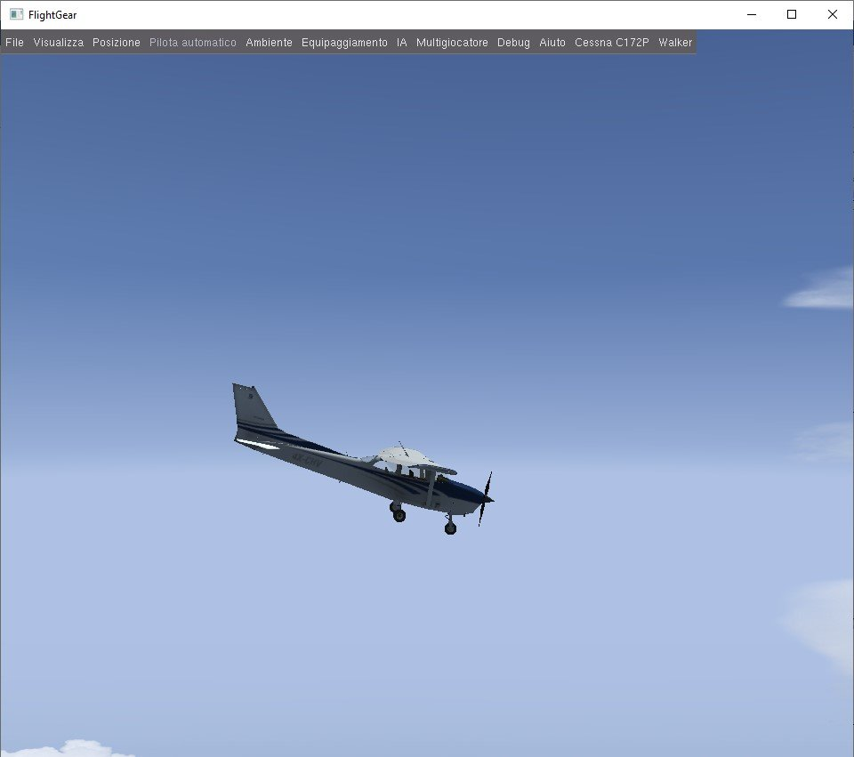

Commandes de vol d'avion
Cessna 172 : amortisseur de tangage et pilote automatique d'assiette
Un cycle de conception complet sur un modèle non linéaire à 6 DDL du Cessna 172, équilibré en montée stabilisée à 5000 m.
- Modèles longitudinal et latéral-directionnel linéarisés numériquement et vérifiés par rapport aux dérivées de stabilité analytiques ; modes comparés à leurs approximations littérales.
- Amortisseur de tangage dimensionné selon les critères de qualités de vol de niveau 1 : amortissement de l'oscillation d'incidence porté de 0,217 à 0,3.
- Pilote automatique d'assiette par compensation au lieu des racines, implémenté sous forme de PID avec saturation de la gouverne de profondeur à ±25° et anti-windup par back-calculation.
- Boucle fermée exécutée en temps réel, le modèle Simulink alimentant FlightGear.
0,217 → 0,3amortissement de l'oscillation d'incidence avec Kq = −0,04
±15°consignes d'assiette suivies dans FlightGear

